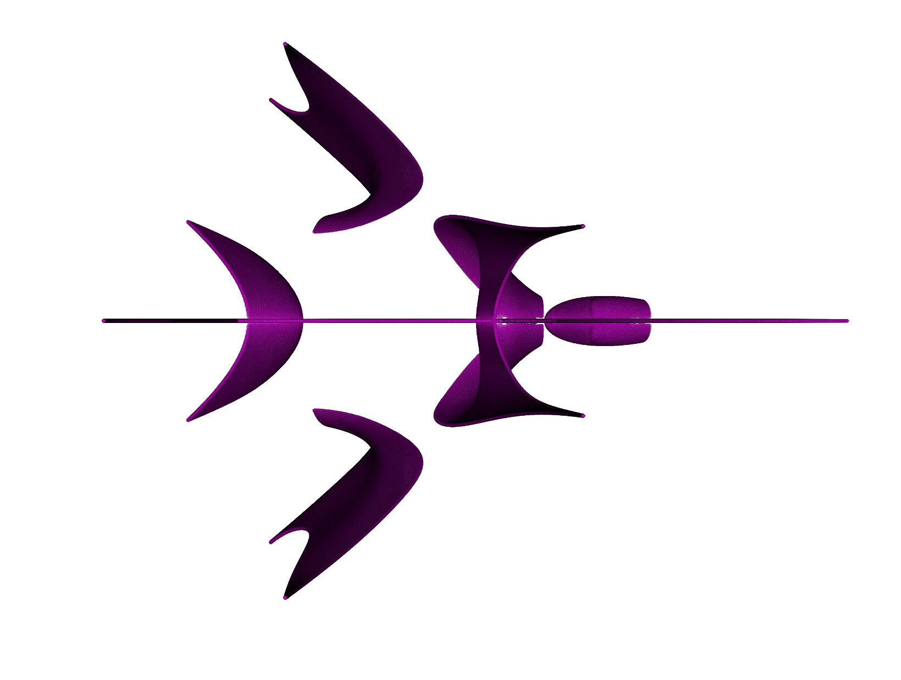

Endless Eigenart in 3 lines of code
Science is what we understand well enough to explain to a computer. Art is everything else we do. — Donald Knuth
If we import numpy and matplotlib,
import numpy as np
import matplotlib.pyplot as pltthen we can generate really nice art in just 3 lines of code.
As = np.random.randn(6,6,3)
vals = [val for s in np.linspace(0,1,500) for t in np.linspace(0,1-s,500) for val in np.linalg.eigvals(s*As[:,:,0] + t*As[:,:,1] + (1-s-t)*As[:,:,2])]
plt.plot(np.real(vals), np.imag(vals), 'mo', alpha=.5, markeredgewidth=.1, markeredgecolor='k', markersize=1.5)

Of course, this code was condensed for the novelty of having as few lines of code as possible. It is quite beautiful that essentially infinitely many (if not for the finiteness of the floating point system among other physical limitations) pretty images can be completely specified in so few lines of code. Compare this to the complexity of a Post-Impressionist oil painting, which would require data at the atomic level of every brushstroke to unambiguously store. To be fair, a better comparison would probably take into account the size of the library functions called along with the python interpreter, and it can be argued that a painting does not require atomic level information to understand or experience. Even so, the basic point still stands.
Coming in at a more modest 9 lines we have code that is more flexible and easy to read:
def eigenart(n, prec=500):
A1 = np.random.randn(n,n)
A2 = np.random.randn(n,n)
A3 = np.random.randn(n,n)
vals = []
for s in np.linspace(0,1, prec):
for t in np.linspace(0,1-s, prec):
vals.extend(np.linalg.eigvals(s*A1 + t*A2 + (1-s-t)*A3))
plt.plot(np.real(vals), np.imag(vals), 'mo', alpha=.5, markeredgewidth=.1, markeredgecolor='k', markersize=1.5)The generated art is simply the set of all complex numbers that occur as an eigenvalue of some matrix in a convex set of matrices. Let \(M_n(\mathrm{F})\) denote the set of \(n \times n\) matrices with entries in \(\mathbb{F}\), \(\sigma(A)\) denote the set of eigenvalues of the matrix \(A\), and \(\mathrm{Co}(S)\) denote the convex hull of \(S\). For a set of matrices \(S \subseteq M_n(\mathbb{C})\), we define the hull spectra of \(S\) to be \[\mathrm{HS}(S) = \{\lambda \in \sigma(A) : A \in \mathrm{Co}(S) \}\] Thus, our eigenart function plots \(\mathrm{HS}(\{A_1, A_2, A_3\})\) for three random matrices \(A_1, A_2,\) and \(A_3\) in \(M_n(\mathbb{R})\) with entries drawn from a standard normal distribution. We can now understand certain properties of the generated art.
In the eigenart function, \(n\) is the size of the matrices. Larger \(n\) gives more complex hull spectra as each matrix in \(\mathrm{Co}(S)\) has more eigenvalues, and they interact in more complex ways. prec controls the number of convex combinations of matrices whose eigenvalues are computed and plotted. It can be increased to get rid of some of the areas of low density, or decreased to allow for less expensive computation. The plotting parameter alpha allows transparent markers so that overlap can be seen. Also, the small black marker edges allow for a shading effect, as areas that are denser with eigenvalues appear darker.
The hull spectra shown above are symmetric about the real axis—the generator matrices were chosen to be real, and the non-real eigenvalues of real matrices in \(M_n(\mathbb{R})\) come in conjugate pairs. If we instead take our random generators to have non-real entries as well, then the hull spectra does not have this symmetry. Also, real matrices tend to have some real eigenvalues with high probability (for instance, any \(n \times n\) real matrix with \(n\) an odd number has at least one real eigenvalue), so most hull spectra of real matrices contain a line segment or multiple line segments on the real line.
Let \(A_{s, t} = s A_1 + t A_2 + (1-s-t) A_3\) be a matrix in \(\mathrm{Co}(\{A_1, A_2, A_3\})\). Continuity and differentiability of the eigenvalues of a family of matrices is a technical subject, so what follows is rather hand-wavy. The entire set of eigenvalues of a matrix depends continuously on its entries. Some of the holes in the hull spectra are actual holes where there are no eigenvalues. However, some of the areas where there are holes or that are sparse with eigenvalues are actually mathematically completely solid; the choice of a finite number of matrices in the convex hull to evaluate at causes them to appear empty. These spots tend to occur near an eigenvalue of higher multiplicity, which is where non-differentiability of eigenvalues can occur. This explains sparse areas of eigenvalues near the real line, as when a non-real eigenvalue approaches the real line, its conjugate is another eigenvalue that approaches the real line. Elsewhere, the shading shows “folds” and other properties that seem to give the hull spectra depth. This can be explained by the fact that the hull spectra is a projection onto the first two coordinates of the higher dimensional surface consisting of points of the form \(\big(\Re\; \lambda(A_{s,t}), \Im\; \lambda(A_{s,t}), s, t\big)\) in \(\mathbb{R}^4\) (recall that the eigenvalues depend continuously on \(s\) and \(t\)).
The eigenvalues of a matrix are the roots of its characteristic polynomial, and any polynomial \(p\) has a corresponding matrix \(C\) (the companion matrix) such that the eigenvalues of \(C\) are precisely the roots of \(p\). From another viewpoint, the hull spectra \(\mathrm{HS}(S)\) can also be viewed as the roots of the characteristic polynomials of matrices in \(\mathrm{Co}(S)\) Others have created or discovered art from the roots of polynomials before: this post by John Baez and the work of Bahman Kalantari in polynomiography provide striking examples.
While hull spectra do provide amazing images, my interest in them arose from important problems in mathematics. One open problem that has been unsolved for decades is that of determining the set of complex numbers which occur as the eigenvalue of some \(n \times n\) doubly stochastic matrix. Equivalently, this set is the hull spectra of the \(n \times n\) permutation matrices. This article [1] provides a good survey of this problem and similar problems; I have also published two works in this field [2] [3].
[1] Charles R. Johnson, Carlos Marijuán, Pietro Paparella, and Miriam Pisonero. “The NIEP.” Operator Theory, Operator Algebras, and Matrix Theory, pp. 199-220 (2018).
[2] Eric Jankowski, Charles R. Johnson, and Derek Lim. “Spectra of convex hulls of matrix groups.” Linear Algebra and its Applications (2020).
[3] Amit Harlev, Charles R. Johnson, and Derek Lim. “The Doubly Stochastic Single Eigenvalue Problem: A Computational Approach.” Experimental Mathematics (2020).